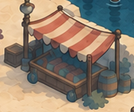
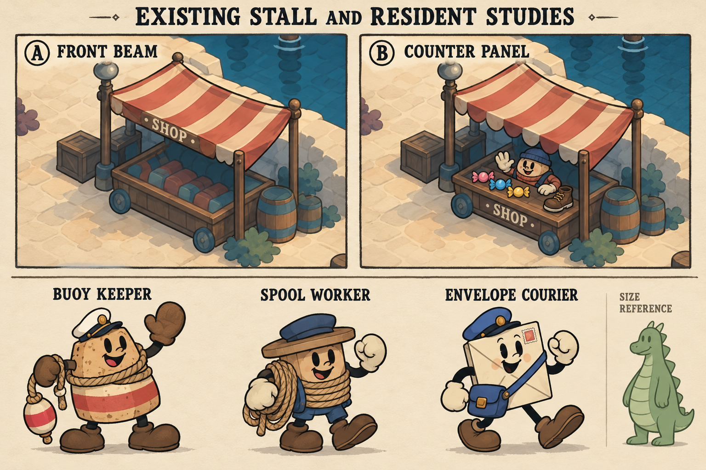

The Bubble Brigade · Harbor approval slice · 27 October 2026
Bring the existing harbor to life
Preserve the accepted map. Correct its walking boundaries and layer carefully aligned sprite animation, readable interactions, and original residents into the scenery already here.
This is review material. Numbered callouts and dashed regions are explanatory overlays, not changes to the map. Dashed boxes identify candidate areas for localized studies, not final edit masks. The image underneath is the exact accepted painting.
The current harbor and proposed work areas
Native painting: 1254 × 1254 pixels. Map coordinates: 1536 × 1536. Every overlay uses the existing source transform; the painting is neither cropped nor repainted. Green geometry is walkable; coral geometry is existing solid; cyan geometry marks the two corrected palm-bed footprints. Yellow points are existing encounter anchors; blue points are existing guide/vendor anchors.
Collision against the paintingReview walls, coast edges, planted beds, props, stairs, and bridges. Correct geometry where it disagrees with the existing art; do not move the scenery to fit the polygons.
Existing doorwaysKeep every doorway in place. Align approach zones, prompts, and return anchors to the visible entrance. Local door/shutter drawings can distinguish availability without flags.
The existing supply stallKeep this stall, striped canopy, footprint, barrels, and walking apron. Study integrated shop lettering, clear powerup stock, and a non-dragon merchant within this location.
The existing lighthouseKeep the tower and dome silhouette. Study lantern-only drawings with a front frame occluding the moving parts. Remove the current stretched beam treatment when the replacement is approved.
One exact coastline sectionTrace a contact line and retreating ripples for this existing shore. Only baked water-contact marks inside a precise approved mask may be restored underneath. The cliff, coast shape, and open sea remain.
Foreground overlapSeparate selected existing rails, foliage, or façade pieces in place so the player and residents sit behind/in front correctly. The combined resting composition must still match this map.
Art studies for approval
These studies establish the treatment before production. New character silhouettes, shop treatments, and frame drawings require review at actual gameplay scale. The rejected replacement-harbor illustration is not part of this package.
Motion / design study
Coastline motion study
Contact-line and retreating-ripple design on a crop of the existing shore.
Approval study only. Drawing registration drifts slightly between generated frames; these are not production-ready pixel-registered overlays and have not been imported into the game.
Motion / design study
Lighthouse motion study
A subtle changing light inside the existing small lantern housing.
Approval study only. Drawing registration drifts slightly between generated frames; these are not production-ready pixel-registered overlays and have not been imported into the game.
Motion / design study
Stall and resident design studies
A: lettering on the front beam. B: lettering on the counter panel, stock, and merchant. Original living buoy, spool, and envelope residents are unapproved character proposals.

Existing unchanged crop

Generated motion/design study
Design-size readability preview
Actual shipped player sprite at its presentation design size (48 × 61); proposed NPC crops normalized to 61 high on a common baseline. This is not physical-screen or in-engine scale approval.
Actual player
Buoy keeper
Spool worker
Envelope courier
Approval study only. Drawing registration drifts slightly between generated frames; these are not production-ready pixel-registered overlays and have not been imported into the game.
The small dragon doodle on this sheet is not the shipped player or an approved size reference. The separate design-size strip uses the actual shipped player. Character scale still requires engine captures.
What the Cuphead reference establishes
Inspected asset structure
Application to this map
Separate terrain, location sprites, and foreground/top pieces
Preserve the map painting while registering selected actors, animated parts, and occluders in place.
Isle I: four geography-specific waterline sections × three drawings; matching ripple sections × six drawings
Author original contact/ripple overlays following this harbor’s actual coast. Do not assemble arbitrary rotated shoreline fragments.
Separate three-drawing shop sprites with integrated SHOP fascia, entrance, and steps
Make the existing stall read as a shop through its own structure, stock, and merchant. No added flags or replacement building.
Distinct NPC silhouettes with idle, blink, transition, and action drawings
Replace recolored dragon residents with approved original characters and authored performances.
Frame counts are verified from the local extracted collection; playback timing is not established. The extracted lighthouse is a static painting, so its files do not demonstrate an animated lighthouse. Cuphead artwork remains reference material and is not included in production assets.
Acceptance and preservation
Preserve
All five accepted painting files; existing geography, building placement, paths, coast contours, palette, camera framing, source transform, and destination coordinates.
The committed preservation manifest records exact PNG hashes and map registration. Collision polygons are intentionally not frozen: correcting their alignment is part of the work. The existing hidden coin anchor stays fixed; its interaction radius changes from 26 to 68 source pixels so it remains reachable from paving beside the corrected planting bed.
Recorded engine movement stays on approved ground and reaches every required destination. Door prompts do not activate through walls. Sprite frames remain registered at first, middle, last, and wrap frames. No duplicate baked foam, particle substitute, or generic beam remains in the approved slice.
Review slim and wide engine captures, phone-low memory, atlas batches, and worst-visible draw counts. Engineering checks and artistic approval are separate gates.
Measured starting point
Headless release-host baseline over 600 paused simulation steps: step p95 0.120416 ms, presentation p95 1.012042 ms, JS heap 30.0604 MiB. The slim capture used 7 draw calls and reported 0 particle instances. These are local relative diagnostics, not phone FPS, handset memory, thermal measurements, or a worst-case draw-call verdict.
Scope decisions still open
The working scope is one shop on each of the five explorable district maps. Powerup prices, permanent unlocks versus consumables, equipment limits, and retry/death rules remain explicit economy decisions before that feature is implemented.